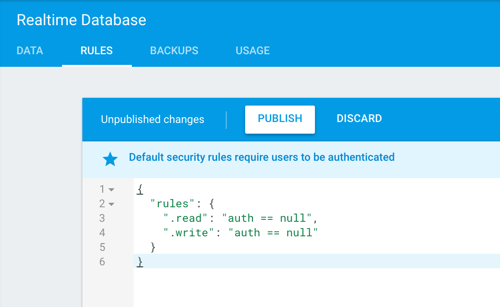
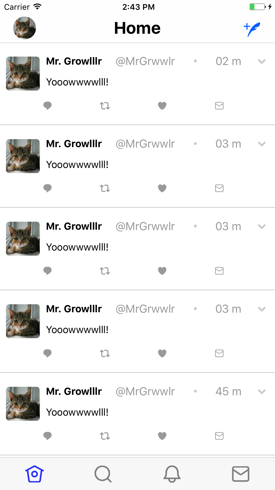

<!--
Copyright (c) 2016 Google Inc.

Licensed under the Apache License, Version 2.0 (the "License"); you may not
use this file except in compliance with the License. You may obtain a copy of
the License at

    http://www.apache.org/licenses/LICENSE-2.0

Unless required by applicable law or agreed to in writing, software
distributed under the License is distributed on an "AS IS" BASIS, WITHOUT
WARRANTIES OR CONDITIONS OF ANY KIND, either express or implied. See the
License for the specific language governing permissions and limitations under
the License.
-->
<link rel="import" href="../../step-style.html">
<link rel="import" href="../../syntax-style.html">
<dom-module id="step-6">
   <style include="step-style"></style>
   <style include="syntax-style"></style>

  <template>
    <p>We've built our UI, now it's time to populate it with database-driven content, fed by Firebase, rather than the hard-coded text we used previously.
    In this section, we're going to add a service and a model tier to our app. We'll continue to flesh out these elements
    as we build on our database integration.</p>

    <p>In the app folder, create two new folders, one called services and one called models. In the services folder, create a file called firebase.service.ts. 
      In the model folder, create a file called yowl.model.ts. These files will contain the business logic for our app.</p>

    <p>Copy this code into firebase.service.ts:</p>

    <pre><code>
import { Injectable, NgZone } from &#x22;@angular/core&#x22;;
import { Yowl } from &#x22;../models/yowl.model&#x22;;
import firebase = require(&#x22;nativescript-plugin-firebase&#x22;);
import { Observable } from &#x27;rxjs/Observable&#x27;;
import { BehaviorSubject } from &#x27;rxjs/BehaviorSubject&#x27;;
import &#x27;rxjs/add/operator/share&#x27;;

@Injectable()
export class FirebaseService {
  constructor(
    private ngZone: NgZone,
  ){}


yowls: BehaviorSubject&#x3C;Array&#x3C;Yowl&#x3E;&#x3E; = new BehaviorSubject([]);
private _allYowls: Array&#x3C;Yowl&#x3E; = [];


 getYowls(): Observable&#x3C;any&#x3E; {
    return new Observable((observer: any) =&#x3E; {
      let path = &#x27;Yowls&#x27;;
      
        let onValueEvent = (snapshot: any) =&#x3E; {
          this.ngZone.run(() =&#x3E; {
            let results = this.handleSnapshot(snapshot.value);
             observer.next(results);
          });
        };
        firebase.addValueEventListener(onValueEvent, &#x60;/${path}&#x60;);
    }).share();              
  }

  sendYowl(Yowl:any) {
    let yowl = Yowl;   
    return firebase.push(
        &#x22;/Yowls&#x22;,
        { &#x22;name&#x22;: &#x22;Mr. Growlllr&#x22;, &#x22;username&#x22;: &#x22;MrGrwwlr&#x22;, &#x22;text&#x22;: &#x22;Yooowwwwlll!&#x22;, &#x22;date&#x22;: 0 - Date.now()}
      ).then(
        function (result:any) {
          return &#x27;Yowwled!&#x27;;
        },
        function (errorMessage:any) {
          console.log(errorMessage);
        }); 
  }

  handleSnapshot(data: any) {
    //empty array, then refill and filter
    this._allYowls = [];
    if (data) {
      for (let id in data) {        
        let result = (&#x3C;any&#x3E;Object).assign({id: id}, data[id]);
          this._allYowls.push(result);
      }
      this.publishUpdates();
    }
    return this._allYowls;
  }

   publishUpdates() {
    this._allYowls.sort(function(a, b){
        if(a.date &#x3C; b.date) return -1;
        if(a.date &#x3E; b.date) return 1;
      return 0;
    })
    this.yowls.next([...this._allYowls]);
  }

  handleErrors(error) {
    console.log(JSON.stringify(error));
    return Promise.reject(error.message);
  }
}
    </code></pre>

<p>Here, we have created several functions, one to read all the Yowls from the Yowl collection in the database, one to send a new Yowl,
  and some helper functions to allow us to manage Firebase's realtime updates so that our UI will be able to listen for changes and update on the fly.
  This code also leverages properties particular to Angular such as ngZone which helps update the UI, and we also make use of rxjs Observables.</p>

<p>Next, paste the following code into the yowl.model.ts file you just created:</p>

<pre>
export class Yowl {
    constructor
      (
        public id: string,
        public name: string,
        public username: string,
        public text: string,
        public date: string
      )
    {}   
}
</pre>

<p>This model holds the shape of the data as it is fed to the database. Now that the service and model tiers are in place, we need to wire up the UI to accept them. 
  To do that, we need to make some edits to the components. Let's edit the app/tabs/home/home.component.html file first.</p>

<p>In this html file, change the first &#x3C;FlexboxLayout&#x3E; line to this, so that the UI can listen asynchronously to database updates:</p>

<pre><code>
&#x3C;FlexboxLayout class=&#x22;container&#x22; *ngFor=&#x22;let yowl of (yowls$ | async)&#x22;&#x3E;
</code></pre>

Then, edit the Flexbox layout block that contains the text to enable dynamic data:

<pre><code>
  &#x3C;FlexboxLayout class=&#x22;row pad&#x22;&#x3E;
    &#x3C;Label width=&#x22;30%&#x22; class=&#x22;bold&#x22; [text]=&#x22;yowl.name&#x22;&#x3E;&#x3C;/Label&#x3E;
    &#x3C;Label width=&#x22;30%&#x22; class=&#x22;darkgrey&#x22; [text]=&#x22;&#x27;@&#x27;+yowl.username&#x22;&#x3E;&#x3C;/Label&#x3E;
    &#x3C;Label width=&#x22;10%&#x22; class=&#x22;fa lightgrey tiny&#x22; text=&#x22;&#x26;#xf111;&#x22;&#x3E;&#x3C;/Label&#x3E;
    &#x3C;Label width=&#x22;20%&#x22; class=&#x22;darkgrey small&#x22; text=&#x22;{{yowl.date | date:&#x27;mm&#x27;}} m&#x22;&#x3E;&#x3C;/Label&#x3E;
    &#x3C;Label width=&#x22;10%&#x22; class=&#x22;fa lightgrey small&#x22; text=&#x22;&#x26;#xf078;&#x22;&#x3E;&#x3C;/Label&#x3E;
  &#x3C;/FlexboxLayout&#x3E;

  &#x3C;!-- yowl --&#x3E;
  &#x3C;Label class=&#x22;row regular&#x22; textWrap=&#x22;true&#x22; [text]=&#x22;yowl.text&#x22;&#x3E;&#x3C;/Label&#x3E;                   
</code></pre>

<p>Next, we have to edit the app/tabs/home/home.component.ts file. Replace the contents of this file with the following code:</p>

<pre>
import { Component, OnInit } from "@angular/core";
import { Observable } from 'rxjs/Observable';
import { FirebaseService } from "../../services/firebase.service";

@Component({
    moduleId: module.id,
    selector: "Home",
    templateUrl: "home.component.html"
})
export class HomeComponent implements OnInit {

    public constructor(
        private firebaseService: FirebaseService
    ) {}

    public yowls$: Observable<any>;
    
    public ngOnInit() {
        this.yowls$ = <any>this.firebaseService.getYowls();
    }

}
</pre>

<p>If you run your app at this point, you may notice an error: "Error: No provider for FirebaseService!". This can be fixed
  by remembering to add your service to the list of providers in the app module. In the root app.module.ts file, 
  import the service at the top:</p>

<pre>
  import { FirebaseService } from "./services/firebase.service";
</pre>

<p>Then, add it to the providers:</p>

<pre>
providers: [
    FirebaseService,
        { provide: NgModuleFactoryLoader, useClass: NSModuleFactoryLoader }
    ],
</pre>

<hr>

<p>Now the app should run without errors, but it will be blank, because we have not yet pushed data to our database. 
  Let's enable the top 'write' button to write some text to the database so we can see it display.</p>

<p>In app/tabs/home/home.component.html, edit the top 'write' button in the ActionBar to give it an event that will fire when
  the button is pressed:</p>

<pre><code>
  &#x3C;ActionItem ios.position=&#x22;right&#x22; (tap)=&#x22;sendYowl()&#x22;&#x3E;
        &#x3C;Button class=&#x22;ei&#x22; text=&#x22;&#x26;#xf029;&#x22;&#x3E;&#x3C;/Button&#x3E;
  &#x3C;/ActionItem&#x3E;
</code></pre>

<p>Now, let's wire up that sendYowl function in app/tabs/home/home.component.ts. Now we can leverage the model we created earlier.
In this file, import the model at the top:</p>

<pre>
  import { Yowl } from "../../models/yowl.model";
</pre>

<p>Then, under the initial line where we export the class implementing OnInit, build some default strings to hold data:</p>

<pre>
  public yowl: Yowl;
    id: string;
    name: string;
    username: string;
    text: string;
    date: string;
</pre>

<p>Finally, add a function that calls the service to send some data to the database:</p>

<pre>
  sendYowl(){
      this.yowl = new Yowl(
          this.id,
          this.name,
          this.username,
          this.text,
          this.date
      )
        this.firebaseService.sendYowl(this.yowl).then((message:any) => {
            alert(message);
       }) 
    }
</pre>

<p>There's one more bit of work that needs to be completed for you to see the data in your app. For the moment, set your database
permissions to allow all users (not just those authenticated) to read from and write to your database. Do this in the Firebase console by changing the database rules.</p>



<aside class="warning"><p>This setting is something that you should use with care in a production environment, as it enables anyone to write to your database without authenticating.</p></aside>

<p>Congratulations! You have created a Firebase-enabled mobile app that can help cats communicate! In the next SnackLab, we will work to authenticate and personalize
  the user experience to avoid the hard-coded data we used above.
</p>




  

  </template>
  <script>
    Polymer({
      is: "step-6"});
  </script>
</dom-module>
